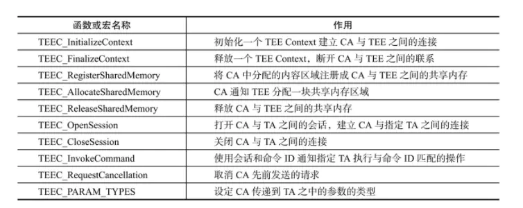
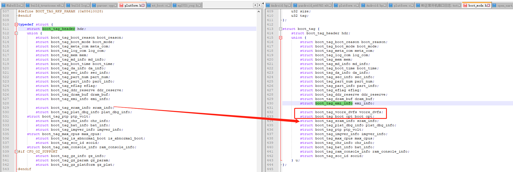

豆荚TEE兼容方案实现
由于M50/M8项目需要更换TEE，从瓶钵换成豆荚，需要重新做兼容。
参考
欺骗tee服务读取设备device属性
修改如下：
--- a/bionic/libc/system_properties/system_properties.cpp
+++ b/bionic/libc/system_properties/system_properties.cpp
@@ -223,6 +223,10 @@ int SystemProperties::Get(const char* name, char* value) {
if (pi != nullptr) {
int ret = Read(pi, nullptr, value);
if (ret > 0) {
+ async_safe_format_log(ANDROID_LOG_ERROR, "libc",
+ "print the The property name length for \"%s\" "
+ " to read this property. (the value \"%s\") current name %s uid=%d",
+ name, value,getprogname(),getuid());
if(strcmp(value,"M8") == 0 && strcmp(name,"ro.boot.terminal_name") != 0 && getuid() == 1000 && strcmp(getprogname(),"teed") == 0){
char m8[] = {"M50"};
memset(value,0,ret);
@@ -233,6 +237,16 @@ int SystemProperties::Get(const char* name, char* value) {
name, value,getprogname(),getuid());
return strlen(m8);
}
+ else if (strcmp(name,"ro.product.device") == 0 && getuid() == 1000 && strcmp(getprogname(),"teei_daemon") == 0) {
+ char m8[] = {"PAYTABLETM8"};
+ memset(value,0,ret);
+ strcpy(value,m8);
+ async_safe_format_log(ANDROID_LOG_ERROR, "libc",
+ "print the The property name length for \"%s\" "
+ " to read this property. (the value \"%s\") current name %s uid=%d",
+ name, value,getprogname(),getuid());
+ return strlen(m8);
+ }
return ret;
}
return ret;
开机打印发现
uid=1000依旧是1000，而且服务进程名称为teei_daemon：
2022-10-09 14:56:05.150 10306-10306/? E/libc: print the The property name length for "ro.product.device" to read this property. (the value "PAYPHONEM50") current name teei_daemon uid=1000
按照如上修改后M50成功骗过tee进入，打印如下：
<6>[ 5.205476] .(4)[345:init]BOOTPROF: 5205.461165:INIT:Mount_END --late
<6>[ 5.206471] .(3)[430:teei_daemon]BOOTPROF: 5206.461627:TEEI BOOT Decrypt Unlocked
<6>[ 5.206487] .(3)[430:teei_daemon]BOOTPROF: 5206.484934:TEEI BOOT Service2 Inited
<6>[ 5.206956] .(3)[430:teei_daemon]BOOTPROF: 5206.950550:TEEI BOOT Load TEES Completed
<6>[ 5.206968] .(3)[430:teei_daemon]BOOTPROF: 5206.966242:TEEI BOOT All Completed
<6>[ 5.206975] .(3)[430:teei_daemon]BOOTPROF: 5206.973242:TEEI_BOOT_OK
<6>[ 5.206982] .(3)[430:teei_daemon]BOOTPROF: 5206.979780:TEEI start to load driver TAs
<6>[ 5.207427] -(0)[249:teei_log_thread][TZ_LOG] uTSecMan| lookup ta: '020b0000000000000000000000000000' (40)
<6>[ 5.207436] -(0)[249:teei_log_thread][TZ_LOG] uTSecMan| enable model control
<6>[ 5.208030] -(0)[249:teei_log_thread][TZ_LOG] uTSecMan| platform:mt6762
<6>[ 5.208539] -(0)[249:teei_log_thread][TZ_LOG] uTSecMan| model:PAYTABLETM8
<6>[ 5.219310] -(7)[249:teei_log_thread][TZ_LOG] uTSecMan| config protocol is 1
<6>[ 5.219331] -(7)[249:teei_log_thread][TZ_LOG] uTSecMan| config version is 1
<6>[ 5.219339] -(7)[249:teei_log_thread][TZ_LOG] uTSecMan| config brand is PAX
<6>[ 5.219347] -(7)[249:teei_log_thread][TZ_LOG] uTSecMan| config model number is 2
<6>[ 5.219356] -(7)[249:teei_log_thread][TZ_LOG] uTSecMan| verify device model success, index:1
<6>[ 5.219365] -(7)[249:teei_log_thread][TZ_LOG] uTSecMan| verify config file model info success
<6>[ 5.223262] -(7)[249:teei_log_thread][TZ_LOG] uTSecMan| [sec_manager_handle.cc:431/package_query_ta]<err>TA is not installed
<6>[ 5.223280] -(7)[249:teei_log_thread][TZ_LOG] uTSecMan|
指纹适配
指纹由于更换了TEE环境，相应的TA和库及驱动也需要重新更新。
TA存放位置发生改变，豆荚的放到
vendor/thh/ta，而瓶钵的是vendor/app/t6/：
--- a/paxdroid/hardware/libhardware/modules/fingerprint/betterlife_tee/Android.mk
+++ b/paxdroid/hardware/libhardware/modules/fingerprint/betterlife_tee/Android.mk
@@ -143,14 +143,27 @@ include $(BUILD_PREBUILT)
ifeq ($(strip $(BTL_FINGERPRINT_TEE)),trustkernel)
include $(CLEAR_VARS)
LOCAL_MODULE_TAGS := optional
- LOCAL_MODULE := f74c8d0d-4284-4acf-d0c425260610b3bd
+ LOCAL_MODULE := f74c8d0d42844acfd0c425260610b3bd
LOCAL_CHECK_ELF_FILES := false
#LOCAL_MODULE_OWER := pax
- LOCAL_SRC_FILES := ta/f74c8d0d-4284-4acf-d0c425260610b3bd.ta
+ LOCAL_SRC_FILES := ta/f74c8d0d42844acfd0c425260610b3bd.ta
LOCAL_MODULE_CLASS := ETC
LOCAL_MODULE_PATH := $(TARGET_OUT_VENDOR)/app/t6
LOCAL_MODULE_SUFFIX := .ta
include $(BUILD_PREBUILT)
endif
+ifeq ($(strip $(BTL_FINGERPRINT_TEE)),beanpod)
+ include $(CLEAR_VARS)
+ LOCAL_MODULE_TAGS := optional
+ LOCAL_MODULE := f74c8d0d42844acfd0c425260610b3bd
+ LOCAL_CHECK_ELF_FILES := false
+ #LOCAL_MODULE_OWER := pax
+ LOCAL_SRC_FILES := ta/f74c8d0d42844acfd0c425260610b3bd.ta
+ LOCAL_MODULE_CLASS := ETC
+ LOCAL_MODULE_PATH := $(TARGET_OUT_VENDOR)/thh/ta
+ LOCAL_MODULE_SUFFIX := .ta
+ include $(BUILD_PREBUILT)
+endif
二供指纹改动如下：
--- a/paxdroid/hardware/libhardware/modules/fingerprint/chipsailing/tee/csfinger_product_64bit.mk
+++ b/paxdroid/hardware/libhardware/modules/fingerprint/chipsailing/tee/csfinger_product_64bit.mk
@@ -3,7 +3,7 @@ CS_LOCAL_SO_PATH := paxdroid/hardware/libhardware/modules/fingerprint/chipsailin
CONFIG_LOCAL_PATH := paxdroid/hardware/libhardware/modules/fingerprint/chipsailing/tee
FINGERPRINT_HARDWARE_MODULE_ID := chipsailing.fingerprint
-TEE_PLATFORM := TRUSTKERNEL
+TEE_PLATFORM := ISEE
CS_IC_SENSOR := 3711
PRODUCT_COPY_FILES += frameworks/native/data/etc/android.hardware.fingerprint.xml:vendor/etc/permissions/android.hardware.fingerprint.xml
@@ -29,7 +29,7 @@ PRODUCT_COPY_FILES += $(CS_LOCAL_PATH)/cf-keys.kl:system/usr/keylayout/cf-keys.k
ifeq ($(TEE_PLATFORM),ISEE)
PRODUCT_COPY_FILES += $(CS_LOCAL_SO_PATH)/ISEE/libfp_hal.so:vendor/lib64/libfp_hal.so
-PRODUCT_COPY_FILES += $(CS_LOCAL_SO_PATH)/ISEE/7778c03fc30c4dd0a319ea29643d4d4b.ta:vendor/thh/7778c03fc30c4dd0a319ea29643d4d4b.ta
+PRODUCT_COPY_FILES += $(CS_LOCAL_SO_PATH)/ISEE/7778c03fc30c4dd0a319ea29643d4d4b.ta:vendor/thh/ta/7778c03fc30c4dd0a319ea29643d4d4b.ta
endif
开机设置菜单未发现指纹，发现selinux报错如下：
10-13 13:15:33.968 6966 6966 I btlfpserver: type=1400 audit(0.0:111): avc: denied { read write } for name="teei_fp" dev="tmpfs" ino=14479 scontext=u:r:btlfpserver:s0 tcontext=u:object_r:teei_fp_device:s0 tclass=chr_file permissive=1
10-13 13:15:40.188 6966 6966 I btlfpserver: type=1400 audit(0.0:116): avc: denied { ioctl } for path="/dev/teei_fp" dev="tmpfs" ino=14479 ioctlcmd=0x5402 scontext=u:r:btlfpserver:s0 tcontext=u:object_r:teei_fp_device:s0 tclass=chr_file permissive=1
尝试关闭selinux，重启btlfpserver服务后设置菜单出现指纹：
PAYTABLETM8_EEA:/ # setenforce 0
PAYTABLETM8_EEA:/ # ps -A| grep btlfpserver
system 849 1 10778816 3812 hrtimer_nanosleep 0 S btlfpserver
PAYTABLETM8_EEA:/ # kill 849
尝试增加selinux权限：
--- a/paxdroid/device/sepolicy/vendor/fingerpint/betterlife/hal_btlfpserver.te
+++ b/paxdroid/device/sepolicy/vendor/fingerpint/betterlife/hal_btlfpserver.te
@@ -30,6 +30,7 @@ hal_client_domain(btlfpserver, hal_allocator)
# Purpose : Allow to use kernel driver
allow btlfpserver blestech_fp_device:chr_file { read write open ioctl };
+allow btlfpserver teei_fp_device:chr_file { read write open ioctl };
还有报错：
btlfpserver: type=1400 audit(0.0:52): avc: denied { read write } for name="isee_tee0" dev="tmpfs" ino=16472 scontext=u:r:btlfpserver:s0 tcontext=u:object_r:teei_client_device:s0 tclass=chr_file permissive=0
继续增加：
--- a/paxdroid/device/sepolicy/vendor/fingerpint/betterlife/hal_btlfpserver.te
+++ b/paxdroid/device/sepolicy/vendor/fingerpint/betterlife/hal_btlfpserver.te
@@ -30,6 +30,8 @@ hal_client_domain(btlfpserver, hal_allocator)
# Purpose : Allow to use kernel driver
allow btlfpserver blestech_fp_device:chr_file { read write open ioctl };
+allow btlfpserver teei_fp_device:chr_file { read write open ioctl };
+allow btlfpserver teei_client_device:chr_file { read write open ioctl };
新老机器启动不同TEE方案
由于需要适配老机器(瓶钵TEE)，需要根据硬件启动不同TEE OS，方案如下：
后续升级OTA/Uniphiz包不包含tee.img和preloader镜像，因为tee os编译在里面。
pl阶段根据烧录的不同preloader加载不同的TEE OS，这里主要是利用preloader向lk传参并设置属性。
kernel阶段两个TEE API兼容。
kernel TEE API兼容
GP定义的客户端接口包括9个函数和1个宏：

如果同时打开瓶钵和豆荚的TEE会出现如下重定义报错：
ld.lld: error: duplicate symbol: TEEC_ReleaseSharedMemory
>>> defined at tee_client_api.c:53 (/ssd/libing/M8-tee/kernel-4.19/drivers/tee/teei/300/tee/tee_client_api.c:53)
>>> drivers/tee/teei/300/tee/tee_client_api.o:(TEEC_ReleaseSharedMemory) in archive built-in.a
>>> defined at tee_kernel_api.c
>>> drivers/tee/tkcore/core/tee_kernel_api.o:(.text+0x574) in archive built-in.a
瓶钵TEE提供给Linux端驱动使用的接口源代码的实现存放在drivers/tee/tkcore/core/tee_kernel_api.c文件中。
豆荚TEE提供给Linux端驱动使用的接口源代码的实现存放在drivers/tee/teei/300/tee/tee_client_api.c文件中。
基本上驱动调用该接口的仅有指纹驱动，下面是指纹读取chip_id流程：
drivers/input/fingerprint/betterlife_fp/bf_fp_spi.c:
* bf_read_chipid
└── bf_spi_read_reg (0x12);
└── spi_send_cmd(g_bf_dev, data_tx, data_rx, 2);
└── tee_spi_transfer(&spi_conf_tk, sizeof(spi_conf_tk), tx, rx, spilen);
├── TK_TEEC_InitializeContext(NULL, &context); //drivers/tee/tkcore/core/peridev.c
├── TK_TEEC_OpenSession(&context, &session, &SENSOR_DETECTOR_TA_UUID, // 根据TA UUID打开TA应用
├── TK_TEEC_InvokeCommand(&session, CMD_READ_CHIPID, &op, &returnOrigin); //重要 发送CMD_READ_CHIPID指令给TA端获取chip id
├── TK_TEEC_CloseSession(&session);
└── TK_TEEC_FinalizeContext(&context);
想要指纹在豆荚的TEE中使用也需要使用到瓶钵封装的spi接口，因为豆荚没有专门封装spi接口：
drivers/input/fingerprint/betterlife_fp/Makefile:
ifeq ($(strip $(TEE_PLATFORM)), TEE_BEANPOD)
ccflags-y += -I$(srctree)/drivers/tee/tkcore/include/linux
$(info "**************** beanpod tee ****************")
ccflags-y += -DTEE_BEANPOD
ccflags-y += -DCONFIG_MTK_CLK
endif
另外libteec库提供给上层用户使用的API一共有10个，都按照GP标准进行定义，使用这10个API能够满足用户在Linux用户空间的需求，在系统中这部分会被编译成libteec库，保存在REE侧的文件系统中以备上层使用。
具体api接口路径在microtrust/source/common/300/optee_client/public/tee_client_api.h和trustkernel/source/services/teeclient/include/tee_client_api.h。
具体请参考：
那么我们将瓶钵驱动中的10个函数名称修改一下drivers/tee/tkcore：
sed -i "s/TEEC_InitializeContext/TK_TEEC_InitializeContext/g" `grep TEEC_InitializeContext -rl . `
sed -i "s/TEEC_FinalizeContext/TK_TEEC_FinalizeContext/g" `grepTEEC_FinalizeContext -rl . `
sed -i "s/TEEC_FinalizeContext/TK_TEEC_FinalizeContext/g" `grep TEEC_FinalizeContext -rl . `
sed -i "s/TEEC_OpenSession/TK_TEEC_OpenSession/g" `grep TEEC_OpenSession -rl . `
sed -i "s/TEEC_CloseSession/TK_TEEC_CloseSession/g" `grep TEEC_CloseSession -rl . `
sed -i "s/TEEC_InvokeCommand/TK_TEEC_InvokeCommand/g" `grep TEEC_InvokeCommand -rl . `
sed -i "s/TEEC_RegisterSharedMemory/TK_TEEC_RegisterSharedMemory/g" `grep TEEC_RegisterSharedMemory -rl . `
sed -i "s/TEEC_AllocateSharedMemory/TK_TEEC_AllocateSharedMemory/g" `grep TEEC_AllocateSharedMemory -rl . `
sed -i "s/TEEC_ReleaseSharedMemory/TK_TEEC_ReleaseSharedMemory/g" `grep TEEC_ReleaseSharedMemory -rl . `
经验证，修改后瓶钵指纹依然能够正常读取chip id，正常使用。
pl阶段传参lk流程
参考：
根据pl阶段打印如下：
[PLFM] boot to LK by ATAG reason=4 addr=47E6DA80
RAM_CONSOLE wdt_status 0x2, fiq_step 0x0, exp_type 0x0
RAM_CONSOLE offset:0xAC0
RAM_CONSOLE sram_plat_dbg_info_addr:0x10E400, sram_plat_dbg_info_size:0x200, sram_log_store_addr:0x10E700, sram_log_store_size:0x100
RAM_CONSOLE mrdump_addr:0x10E800, mrdump_size:0x1400, dram_addr:0x47C80000, dram_size:0x10000
RAM_CONSOLE pstore_addr:0x47C90000, pstore_size:0xE0000, pstore_console_size:0x40000, pstore_pmsg_size:0x10000
RAM_CONSOLE mrdump_mini_header_addr:0x47D70000, mrdump_mini_header_size:0x10000, magic1:0x61646472, magic2:0x73697A65
BOOT_REASON: 4
11 pax_new_board: 1
BOOT_MODE: 0
MEM_SIZE: 0x2B08
MEM_SIZE: 0x2B1A
BOOT_TIME: 1443
[BLDR] jump to 0x48000000
[BLDR] <0x48000000>=0xEA000007
[BLDR] <0x48000004>=0xEA0077DD
[TZ_SEC_CFG] [B]SRAMROM SEC_ADDR:0x0, SEC_ADDR1:0x0, SEC_ADDR2:0x0
[TZ_SEC_CFG] [B]SRAMROM SEC_CTRL:0x80000000, SEC_CTRL2:0x0, SEC_CTRL5:0x0, SEC_CTRL6:0x0
[TZ_SEC_CFG] [A]SRAMROM SEC_ADDR:0x9000DC00, SEC_ADDR1:0xDC00, SEC_ADDR2:0xDC00
[TZ_SEC_CFG] [A]SRAMROM SEC_CTRL:0x80000B69, SEC_CTRL2:0x0, SEC_CTRL5:0x1680000, SEC_CTRL6:0x0
platform/mt6765/src/core/main.c这里主要是配置跳转ATF的地址(0x48000000)，和要传递的跳转参数，跳转参数是g_dram_buf->boottag:
void main(u32 *arg)
{
#if !(CFG_BYPASS_LOAD_IMG_FORCE_ATF)
/* Do not load ATF, lk, load by JTAG */
if (0 != bldr_load_images(&jump_addr)) {
pal_log_err("%s Second Bootloader Load Failed\n", MOD);
#if !CFG_BYPASS_EMI
goto error;
#endif
}
#else
//CFG_UBOOT_MEMADDR platform/mt6765/default.mak
// CFG_UBOOT_MEMADDR :=0x48000000
jump_addr = CFG_UBOOT_MEMADDR;
#endif
BOOTING_TIME_PROFILING_LOG("load images");
bldr_post_process();
#if CFG_ATF_SUPPORT
trustzone_post_init();
BOOTING_TIME_PROFILING_LOG("trustzone post init");
#endif
#if CFG_BOOT_ARGUMENT_BY_ATAG //这里为1
jump_arg = (u32)&(g_dram_buf->boottag);
#else
jump_arg = (u32)&bootarg;
#endif
/* 64S3,32S1,32S1 (MTK_ATF_BOOT_OPTION = 0)
* re-loader jump to LK directly and then LK jump to kernel directly */
#if CFG_ATF_SUPPORT
pal_log_info("%s Others, jump to ATF\n", MOD);
bldr_jump64(jump_addr, jump_arg, sizeof(boot_arg_t));
#else
bldr_jump(jump_addr, jump_arg, sizeof(boot_arg_t));
#endif
}
platform/mt6765/src/core/inc/dram_buffer.h先看一下数据结构体：
typedef struct{
mtk_bl_param_t bl31_info;
/*bmt.c*/
u8 bmt_buf[BMT_BUFFER_SIZE];
u8 bmt_dat_buf[BMT_DAT_BUFFER_SIZE];
/*nand.c*/
u8 nand_nfi_buf[NAND_NFI_BUFFER_SIZE];
/*download.c*/
part_hdr_t part_hdr_buf[PART_HDR_BUF_SIZE];
/*efi.c*/
u32 crc32_table[256];
u8 gpt_header_buf[4096];
u8 gpt_entries_buf[GPT_BUFFER_SIZE];
/*mmc_common_inter.c*/
unsigned char storage_buffer[STORAGE_BUFFER_SIZE];
/*partition.c*/
u8 img_hdr_buf[IMG_HDR_BUF_SIZE];
unsigned int part_num;
part_hdr_t part_info[PART_MAX_NUM];
part_t partition_info[128];
#if ((CFG_BOOT_DEV == BOOTDEV_SDMMC) || (CFG_BOOT_DEV == BOOTDEV_UFS))
struct part_meta_info meta_info[128];
#endif
/*platform.c*/
boot_arg_t bootarg;
/*print.c*/
u8 log_dram_buf[LOG_BUFFER_MAX_SIZE];
/*sec.c*/
u8 sec_secro_buf[SEC_SECRO_BUFFER_LENGTH];
u8 sec_lib_heap_buf[SEC_LIB_HEAP_LENGTH];
u8 sec_working_buf[SEC_WORKING_BUFFER_LENGTH];
u8 sec_img_buf[SEC_IMG_BUFFER_LENGTH];
/*msdc.c*/
gpd_t msdc_gpd_pool[MSDC_MAX_NUM][MAX_GPD_POOL_SZ] __attribute__ ((aligned(64)));
bd_t msdc_bd_pool[MSDC_MAX_NUM][MAX_BD_POOL_SZ] __attribute__ ((aligned(64)));
#if CFG_PRELOADER_AS_DA
u8 tee1_buf[0x40000];
#endif
#if CFG_FAST_META_SUPPORT
unsigned char proinfo[1024];
#endif
boot_tag *boottag; /*boot args pass to LK by ATAG*/
} dram_buf_t;
extern dram_buf_t *g_dram_buf;
//platform/mt6765/src/drivers/inc/platform.h
//结构体如下：
typedef struct {
struct boot_tag_header hdr;
union {
struct boot_tag_boot_reason boot_reason;
struct boot_tag_boot_mode boot_mode;
struct boot_tag_meta_com meta_com;
struct boot_tag_log_com log_com;
struct boot_tag_mem mem;
struct boot_tag_md_info md_info;
struct boot_tag_boot_time boot_time;
struct boot_tag_da_info da_info;
struct boot_tag_sec_info sec_info;
struct boot_tag_part_num part_num;
struct boot_tag_part_info part_info;
struct boot_tag_eflag eflag;
struct boot_tag_ddr_reserve ddr_reserve;
struct boot_tag_dram_buf dram_buf;
struct boot_tag_emi_info emi_info;
struct boot_tag_sram_info sram_info;
struct boot_tag_plat_dbg_info plat_dbg_info;
struct boot_tag_ptp ptp_volt;
struct boot_tag_chr_info chr_info;
struct boot_tag_bat_info bat_info;
struct boot_tag_imgver_info imgver_info;
struct boot_tag_max_cpus max_cpus;
struct boot_tag_is_abnormal_boot is_abnormal_boot;
struct boot_tag_soc_id socid;
struct boot_tag_ram_console_info ram_console_info;
#if CFG_GZ_SUPPORT
struct boot_tag_gz_info gz_info;
struct boot_tag_gz_param gz_param;
struct boot_tag_gz_platform gz_plat;
#endif
#if CFG_GZ_PWRAP_ENABLE
struct boot_tag_gz_pwrap gz_pwrap;
#endif
#if defined(CFG_RKP_SUPPORT) && CFG_RKP_SUPPORT
struct boot_tag_rkp_param rkp_param;
#endif
} u;
}boot_tag;
可以看到存在boot_tag结构体，看注释这个就是要传递的参数，那g_dram_buf->boottag这个参数是怎么来的？看一下bldr_post_process函数的platform_post_init流程：
static void bldr_post_process(void)
{
platform_post_init();
#if CFG_GZ_SUPPORT
gz_post_init();
BOOTING_TIME_PROFILING_LOG("gz_post_init");
#endif
}
流程如下：
* platform_post_init
└── platform_set_boot_args();
└── #if CFG_BOOT_ARGUMENT_BY_ATAG //这里定义了
└── platform_set_boot_args_by_atag((unsigned int *)&(g_dram_buf->boottag)); // set jump addr
简单看一下里面内容，主要是按照结构体顺序填充变量：
#if CFG_BOOT_ARGUMENT_BY_ATAG
void platform_set_boot_args_by_atag(unsigned int *ptr)
{
int i=0, j=0;
boot_tag *tags;
tags = (boot_tag *)ptr;
tags->hdr.size = boot_tag_size(boot_tag_boot_reason);
tags->hdr.tag = BOOT_TAG_BOOT_REASON;
tags->u.boot_reason.boot_reason = g_boot_reason;
ptr += tags->hdr.size;
tags = (boot_tag *)ptr;
tags->hdr.size = boot_tag_size(boot_tag_boot_mode);
tags->hdr.tag = BOOT_TAG_BOOT_MODE;
#if CFG_FAST_META_SUPPORT
if(g_is_fast_meta)
tags->u.boot_mode.boot_mode = META_BOOT;
else
#endif
tags->u.boot_mode.boot_mode = g_boot_mode;
ptr += tags->hdr.size;
tags = (boot_tag *)ptr;
tags->hdr.size = boot_tag_size(boot_tag_meta_com);
tags->hdr.tag = BOOT_TAG_META_COM;
tags->u.meta_com.meta_com_id = g_meta_com_id;
}
但是发现一个bug，就是pl和lk两个结构共同体对不上，从箭头处就开始不对应了，难怪加到最后面发现lk中死活读不到数据。

将两边结构体同步整理了一下，发现起不来，看串口ATF就死机了，提示没有is_abnormal_boot这个TAG：
[TZ_SEC_CFG] [A]SRAMROM SEC_CTRL:0xB69, SEC_CTRL2:0x0, SEC_CTRL5:0x1680000, SEC_CTRL6:0x0
[ATF](0)[1.691436]INFO: BOOT_REASON: 4
[ATF](0)[1.692623]INFO: RAM_CONSOLE_INFO: addr:0x10dc00, size:0x800, type:0x1, offset:0xac0
[ATF](0)[1.693650]INFO: RAM_CONSOLE_INFO: add▒:0x0, siz▒:0x0, type:0x0, offset:0▒0
[ATF](0)[1.694583]INFO: Preloader is without is_abnormal_boot tag, try to keep data i▒ crash buffer
[ATF](0)[1.695705]INFO: CPUxGPT reg(0)
[ATF](0)[1.696165]INFO: [sys▒imer] CNTCR_REG(0x505)
[ATF](0)[1.696771]INFO: Secondary boo▒loader is AArch32
[ATF](0)[1.697416]INFO: GZ PARAMS = 0x11002000, 0x0, 0x0
[ATF](0)[1.698074]INFO: bl31_plat_arch_setup()
···省略···
[ATF](0)[1.739142]INFO: abnormal_boot: 0xffffffff, cflag: 0xdead1abf
[ATF](0)[1.739911]INFO: atf RA▒ dump
[ATF](0)[1.740377]INFO: ATF l▒g service is registered (0xbfe00000, aee:0xbfe3c000)
[ATF](0)[1.741294]NOTICE: BL31_BASE=0x47d80800, BL31▒TZRAM_SIZE=0x31800
[ATF](0)[1.742091]NOTICE: TZRAM2_BASE=0x47d▒2000, TZRAM2_SIZE=0x1d000
[ATF](0)[1.742867]NOTICE: BL31: v1.4(debug):Uniphiz_11.0.0_Birch_V15.3.01_20220611_Release-143-g60a30ee1f2d-dirty
正常启动如下：
[ATF](0)[1.747990]INFO: BOOT_REASON: 6
?ATF](0)[1.749171]INFO: IS_ABNORMAL_BOOT: 0
[ATF](0)[1.749681]INFO: RAM_CONSOLE_INFO: addr:0x10dc00, size:0x800, type:0x1, offset:0xac0
[ATF](0)[1.750714]INFO: CPUxGPT reg(0)
[ATF](0)[1.751174]INFO: [systimer] CNTCR_REG(0x505)
[ATF](0)[1.751780]INFO: Secondary bootloader is AArch32
[ATF](0)[1.752424]INFO: GZ PARAMS = 0x11002000, 0x0, 0x0
[ATF](0)[1.753081]INFO: bl31_plat_arch_setup()
···省略···
[ATF](0)[1.796678]INFO: abnormal_boot: 0x0, cflag: 0x41544241
最后发现结构体中soc_id没用，那我们用这个来做，修改如下：
--- a/vendor/mediatek/proprietary/bootable/bootloader/lk/app/mt_boot/mt_boot.c
+++ b/vendor/mediatek/proprietary/bootable/bootloader/lk/app/mt_boot/mt_boot.c
@@ -1748,6 +1748,17 @@ int boot_linux_from_storage(void)
cmdline_append(cmdline_tmpbuf);
sprintf(cmdline_tmpbuf, "%s%s%d", CMDLINE_TMP_CONCAT_SIZE, "androidboot.lcm.id=", lcm_id);
cmdline_append(cmdline_tmpbuf);
+
+// [NEW FEATURE]-BEGIN by wugangnan@paxsz.com 2022-10-17, for compatible tee for new machine
+ if (!strcmp(g_boot_arg->socid, "pax_new_board"))
+ {
+ sprintf(cmdline_tmpbuf, "%s%s%d", CMDLINE_TMP_CONCAT_SIZE, "androidboot.pax.newmachine=", 1);
+ cmdline_append(cmdline_tmpbuf);
+ }
+ pal_log_err("[%s]pax_socid (%s)\n",
+ __func__,
+ g_boot_arg->socid);
+// [NEW FEATURE]-END by wugangnan@paxsz.com 2022-10-17, for compatible tee for new machine
switch (g_boot_mode) {
case NORMAL_BOOT:
diff --git a/vendor/mediatek/proprietary/bootable/bootloader/preloader/platform/mt6765/src/drivers/platform.c b/vendor/mediatek/proprietary/bootable/bootloader/preloader/platform/mt6765/src/drivers/platform.c
index 00846c09bf9..7015473a533 100644
--- a/vendor/mediatek/proprietary/bootable/bootloader/preloader/platform/mt6765/src/drivers/platform.c
+++ b/vendor/mediatek/proprietary/bootable/bootloader/preloader/platform/mt6765/src/drivers/platform.c
@@ -531,6 +531,7 @@ void platform_set_boot_args_by_atag(unsigned int *ptr)
tags = (boot_tag *)ptr;
tags->hdr.size = boot_tag_size(boot_tag_emi_info);
tags->hdr.tag = BOOT_TAG_EMI_INFO;
+
#if !CFG_FPGA_PLATFORM
tags->u.emi_info.dram_type = (mt_get_dram_type() & 0xF) | ((get_dram_mr(5) << 24) & 0xFF000000);
tags->u.emi_info.ch_num = get_dram_channel_nr();
@@ -640,7 +641,10 @@ void platform_set_boot_args_by_atag(unsigned int *ptr)
tags = (boot_tag *)ptr;
tags->hdr.size = boot_tag_size(boot_tag_soc_id);
tags->hdr.tag = BOOT_TAG_SOC_ID;
- memcpy(tags->u.socid.id, p_bldr_param->socid, SOC_ID_LEN);
+ // [NEW FEATURE]-BEGIN by wugangnan@paxsz.com 2022-10-17, for compatible tee for new machine
+ //memcpy(tags->u.socid.id, p_bldr_param->socid, SOC_ID_LEN);
+ memcpy(tags->u.socid.id, "pax_new_board", SOC_ID_LEN);
+ // [NEW FEATURE]-END by wugangnan@paxsz.com 2022-10-17, for compatible tee for new machine
ptr += tags->hdr.size;
豆荚及瓶钵TEE配置都打开配置
TEE服务编译
同时打开豆荚及瓶钵TEE配置后，我们需要将豆荚和瓶钵编译的TEE相关服务都编译进系统，瓶钵的TEE OS不编译进系统，即tee.img。
device/mediatek/vendor/common/device.mk”豆荚和瓶钵tee服务如下：
//豆荚
PRODUCT_PACKAGES += android.hardware.keymaster@4.0-service.beanpod
ifeq ($(strip $(MICROTRUST_TEE_SUPPORT)), yes)
PRODUCT_PACKAGES += teei_daemon
PRODUCT_PACKAGES += bp_kmsetkey_ca
PRODUCT_PACKAGES += libTEECommon
PRODUCT_PACKAGES += kmsetkey.beanpod
PRODUCT_PACKAGES += gatekeeper.beanpod
# lib@paxsz.com dynamic set the property start
#PRODUCT_PROPERTY_OVERRIDES += ro.hardware.kmsetkey=beanpod
#PRODUCT_PROPERTY_OVERRIDES += ro.hardware.gatekeeper=beanpod
#PRODUCT_PROPERTY_OVERRIDES += ro.vendor.mtk_microtrust_tee_support=1
#lib@paxsz.com dynamic set the property end
ifeq ($(strip $(MTK_SEC_VIDEO_PATH_SUPPORT)), yes)
ifeq ($(strip $(MTK_TEE_GP_SUPPORT)),yes)
PRODUCT_PACKAGES += AVCSecureVdecCA
PRODUCT_PACKAGES += HEVCSecureVdecCA
endif
endif
ifeq ($(strip $(MICROTRUST_TEE_LITE_SUPPORT)), yes)
PRODUCT_PACKAGES += isee_product.cfg
PRODUCT_PACKAGES += TAs_list
else
PRODUCT_PACKAGES += keymaster_server4
PRODUCT_PACKAGES += gatekeeper_server
PRODUCT_PACKAGES += km_key_manager_ta
#[NEW FEATURE]-BEGIN by wugangnan@paxsz.com 2022-10-13, add beapond TEE
PRODUCT_PACKAGES += isee_model.json
PRODUCT_PACKAGES += 93feffccd8ca11e796c7c7a21acb4932.ta
#[NEW FEATURE]-END by wugangnan@paxsz.com 2022-10-13, add beapond TEE
endif
endif #MICROTRUST_TEE_SUPPORT
//瓶钵
ifeq ($(strip $(TRUSTKERNEL_TEE_SUPPORT)), yes)
# FEATURE]-BEGIN by wugangnan@paxsz.com 2022-10-17, add trustkernel tee build for trustkernel and microtrust tee compatible
PRODUCT_PACKAGES += android.hardware.keymaster@4.0-service.trustkernel
# FEATURE]-END by wugangnan@paxsz.com 2022-10-17, add trustkernel tee build for trustkernel and microtrust tee compatible
PRODUCT_PACKAGES += teed
PRODUCT_PACKAGES += pld
PRODUCT_PACKAGES += kph
PRODUCT_PACKAGES += DAccessProxy
PRODUCT_PACKAGES += dpci
# install keybox
PRODUCT_PACKAGES += 6B6579626F785F6372797074
PRODUCT_PACKAGES += kmsetkey.trustkernel
#FEATURE]-BEGIN by lib@paxsz.com 2022-10-17, dynmaic set the property in init.cpp
#PRODUCT_PROPERTY_OVERRIDES += ro.hardware.kmsetkey=trustkernel
#PRODUCT_PROPERTY_OVERRIDES += ro.hardware.gatekeeper=trustkernel
#PRODUCT_PROPERTY_OVERRIDES += ro.vendor.mtk_trustkernel_tee_support=1
#FEATURE]-END by lib@paxsz.com 2022-10-17,
PRODUCT_PACKAGES += gatekeeper.trustkernel
# for check keybox and productline state
PRODUCT_PACKAGES += tee_check_keybox
# PRODUCT_PROPERTY_OVERRIDES += ro.vendor.trustkernel.keystore=persist
PRODUCT_COPY_FILES += \
vendor/mediatek/proprietary/trustzone/trustkernel/source/ta/02662e8e-e126-11e5-b86d9a79f06e9478.ta:vendor/app/t6/02662e8e-e126-11e5-b86d9a79f06e9478.ta
PRODUCT_COPY_FILES += \
vendor/mediatek/proprietary/trustzone/trustkernel/source/ta/9ef77781-7bd5-4e39-965f20f6f211f46b.ta:vendor/app/t6/9ef77781-7bd5-4e39-965f20f6f211f46b.ta
PRODUCT_COPY_FILES += \
vendor/mediatek/proprietary/trustzone/trustkernel/source/ta/b46325e6-5c90-8252-2eada8e32e5180d6.ta:vendor/app/t6/b46325e6-5c90-8252-2eada8e32e5180d6.ta
PRODUCT_COPY_FILES += \
vendor/mediatek/proprietary/trustzone/trustkernel/source/bsp/platform/common/scripts/kph_cfg/cfg.ini:vendor/app/t6/cfg.ini
PRODUCT_COPY_FILES += \
frameworks/native/data/etc/android.software.device_id_attestation.xml:vendor/etc/permissions/android.software.device_id_attestation.xml
endif
其中写googlekey的TA应用如6B6579626F785F6372797074和keymaster_server4，keymaster_server4指的就是c09c9c5daa504b78b0e46eda61556c3a.ta:
vendor/mediatek/proprietary/trustzone/microtrust/source/common/Android.mk:
include $(CLEAR_VARS)
LOCAL_MODULE := keymaster_server4
LOCAL_SRC_FILES := $(MICROTRUST_TEE_VERSION)/teei/$(LOCAL_MODULE)
LOCAL_MODULE_PATH := $(TARGET_OUT_VENDOR)/thh/ta
LOCAL_INSTALLED_MODULE_STEM := c09c9c5daa504b78b0e46eda61556c3a.ta
LOCAL_MODULE_CLASS := ETC
LOCAL_PROPRIETARY_MODULE := true
LOCAL_MODULE_OWNER := mtk
LOCAL_MULTILIB := 32
include $(BUILD_PREBUILT)
tee.img去掉瓶钵OS
只需删除瓶钵编译脚本即可，路径是vendor/mediatek/proprietary/trustzone/custom/build/trustkernel_config.mk，将如下的全部注释：
--- a/vendor/mediatek/proprietary/trustzone/custom/build/build_trustzone.mk
+++ b/vendor/mediatek/proprietary/trustzone/custom/build/build_trustzone.mk
@@ -46,13 +46,15 @@ endif
endif
# trustkernel
-ifeq ($(TRUSTKERNEL_TEE_SUPPORT),yes)
-ifneq ($(wildcard $(MTK_PATH_SOURCE)/trustzone/trustkernel/source),)
-include $(TRUSTZONE_CUSTOM_BUILD_PATH)/trustkernel_config.mk
-TRUSTZONE_ALL_SECURE_OS += $(my_secure_os)
-TRUSTZONE_modules_to_check += $(TRUSTKERNEL_modules_to_check)
-endif
-endif
+# FEATURE]-BEGIN by wugangnan@paxsz.com 2022-10-17, delete trustkernel tee build for trustkernel and microtrust tee compatible
+#ifeq ($(TRUSTKERNEL_TEE_SUPPORT),yes)
+#ifneq ($(wildcard $(MTK_PATH_SOURCE)/trustzone/trustkernel/source),)
+#include $(TRUSTZONE_CUSTOM_BUILD_PATH)/trustkernel_config.mk
+#TRUSTZONE_ALL_SECURE_OS += $(my_secure_os)
+#TRUSTZONE_modules_to_check += $(TRUSTKERNEL_modules_to_check)
+#endif
+#endif
+# FEATURE]-END by wugangnan@paxsz.com 2022-10-17, delete trustkernel tee build for trustkernel and microtrust tee compatible
在编译时，会调用到这个编译文件，在该文件中，就是将bl31.bin和tee.raw拼在了一起，其中raw是./trustkernel/source/bsp/platform/mt6765/tee/tee.bin，形成了tee.img。
pl阶段去掉瓶钵配置
pl阶段不烧录，主要因为他只能启动豆荚tee os，所以需要将瓶钵的都去掉。
--- a/vendor/mediatek/proprietary/bootable/bootloader/preloader/custom/k62v1_64_pax/cust_bldr.mak
+++ b/vendor/mediatek/proprietary/bootable/bootloader/preloader/custom/k62v1_64_pax/cust_bldr.mak
@@ -32,7 +32,10 @@ ifeq ($(strip $(MTK_TEE_SUPPORT)),yes)
CFG_GOOGLE_TRUSTY_SUPPORT = 0
endif
ifeq ($(strip $(TRUSTKERNEL_TEE_SUPPORT)),yes)
- CFG_TRUSTKERNEL_TEE_SUPPORT = 1
+# [NEW FEATURE]-BEGIN by wugangnan@paxsz.com 2022-10-17, for trustkernel and microtrust tee compatible
+ #CFG_TRUSTKERNEL_TEE_SUPPORT = 1
+ CFG_TRUSTKERNEL_TEE_SUPPORT = 0
+# [NEW FEATURE]-END by wugangnan@paxsz.com 2022-10-17, for trustkernel and microtrust tee compatible
问题点
google key写号失败
fae分析是数组和bin文件不匹配，解密失败了，打印如下：
<6>[ 9.707597] -(2)[252:teei_log_thread][TZ_LOG] uTSecMan| lookup ta: 'c09c9c5daa504b78b0e46eda61556c3a' (40)
<6>[ 9.708870] -(2)[252:teei_log_thread][TZ_LOG] uTSecMan| enable model control
<6>[ 9.709804] -(2)[252:teei_log_thread][TZ_LOG] uTSecMan| ta don't need verify model
<6>[ 9.761463] -(2)[252:teei_log_thread][TZ_LOG] uTSecMan| Secmanager Initialization: total spent 4.0 ms
<6>[ 9.777627] -(2)[252:teei_log_thread][TZ_LOG] uTSecMan| use VFY_PROTOCOL_UUID
<6>[ 9.778592] -(2)[252:teei_log_thread][TZ_LOG] uTSecMan| 1 uuid active offset:15
<6>[ 9.779558] -(2)[252:teei_log_thread][TZ_LOG] uTSecMan| a free ta.
<6>[ 9.780379] -(2)[252:teei_log_thread][TZ_LOG] uTSecMan| ta verify success.
<6>[ 9.781287] -(2)[252:teei_log_thread][TZ_LOG] km4 | km ta create entry.
<6>[ 9.782207] -(2)[252:teei_log_thread][TZ_LOG] km4 | KEYMASTER VERSION: km4.0.
<6>[ 9.783190] -(2)[252:teei_log_thread][TZ_LOG] km4 |
<6>[ 9.783904] -(2)[252:teei_log_thread][TZ_LOG] km4 | km4.0 PAX_mt6762_R_isee350_persist_M8 save B cert kb & utagent & fp_driver 202210081405 sunchenghao
<6>[ 9.787812] -(2)[252:teei_log_thread][TZ_LOG] km4 | AndroidKeymaster Configure finish 0
<6>[ 9.796038] -(2)[252:teei_log_thread][TZ_LOG] km4 | params[1] is empty
<6>[ 9.796960] -(2)[252:teei_log_thread][TZ_LOG] km4 | enter generate random from openssl
<6>[ 9.798044] -(2)[252:teei_log_thread][TZ_LOG] km4 | generate random from openssl,buflen=32
解决方案：
将vendor\mediatek\proprietary\trustzone\microtrust\source\common\300\km4.0\ut_kmsetkey.cpp修改为豆荚匹配的数组。
不能设置pin码的问题
由于软件做了tee兼容，所以需要根据当前的TEE OS来设置使用哪家的gatekeeper和kmsetkey，具体是以下三条属性：
--- a/system/core/init/property_service.cpp
+++ b/system/core/init/property_service.cpp
@@ -154,6 +154,7 @@ static void DebugPropertyThreadLogging() {
UnwindPropertythreadStack();
}
+
static void DropWDSocket() {
uint64_t counter;
TEMP_FAILURE_RETRY(read(wake_wd_thread_fd, &counter, sizeof(counter)));
@@ -1022,6 +1023,20 @@ static void update_sys_usb_config() {
}
}
+static void pax_init_tee_param(){
+ std::string error;
+ std::string machineId = android::base::GetProperty("ro.boot.pax.newmachine", "0");
+ if(machineId == "1"){
+ PropertySet("ro.hardware.gatekeeper","beanpod",&error);
+ PropertySet("ro.hardware.kmsetkey","beanpod",&error);
+ PropertySet("ro.vendor.mtk_microtrust_tee_support","1",&error);
+ }else{
+ PropertySet("ro.hardware.gatekeeper","trustkernel",&error);
+ PropertySet("ro.hardware.kmsetkey","trustkernel",&error);
+ PropertySet("ro.vendor.mtk_trustkernel_tee_support","1",&error);
+ }
+}
+
static void load_override_properties() {
if (ALLOW_LOCAL_PROP_OVERRIDE) {
std::map<std::string, std::string> properties;
@@ -1342,6 +1357,9 @@ void PropertyLoadBootDefaults() {
<< "' while loading .prop files" << error;
}
}
+ //[FEATURE]-Add-BEGIN by (lib@paxsz.com),2 2022/10/20, init tee param
+ pax_init_tee_param();
+ //[FEATURE]-Add-BEGIN by lib@paxsz.com,2022/10/20,init tee param
//[FEATURE]-Add-BEGIN by (wugangnan@paxsz.com),2 021/10/21, set ro.pax.product.id for pax usb pid
pax_property_set_usb_pid();